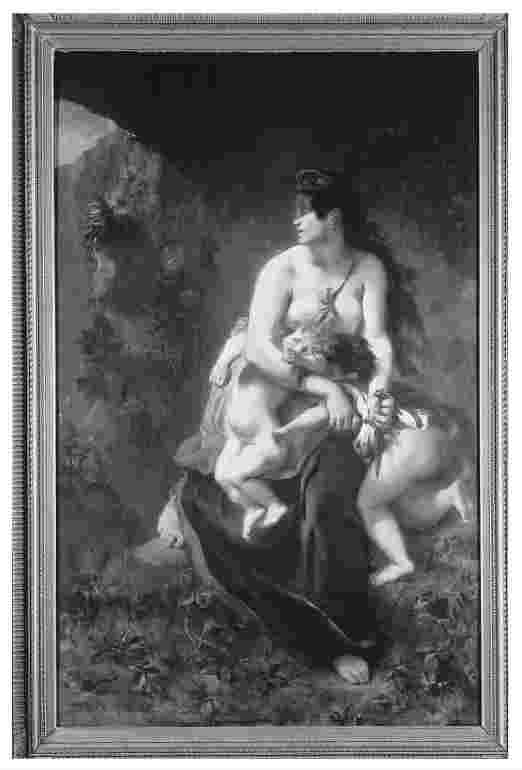
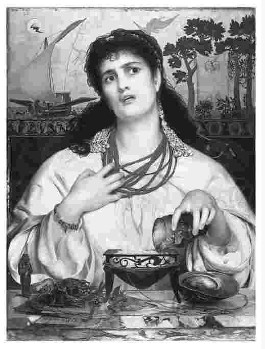

科尔喀斯国王的女儿美狄亚由于爱恋希腊冒险家伊阿宋而背叛了自己的祖国和家庭，伊阿宋把她带回了希腊。他们的日子变得艰难起来；为了扭转自己的时运，伊阿宋离开了美狄亚和他们的两个儿子，准备另娶科林斯国王的女儿为妻。他不了解美狄亚对他的恨有多深，她的牺牲和奉献对他来说也微不足道。美狄亚意识到，只有一个办法能让伊阿宋认识到他做了些什么、背弃了什么承诺。要让他受到的伤害与他给她带来的伤害一样深，唯一的办法就是杀死他们的儿子，使他失去子嗣，生活一无所有。但是她能这样做吗？他们也是她的孩子呀。
在公元前5世纪雅典上演的欧里庇得斯名剧中，美狄亚决心杀死她的儿子，但当她看到他们时又犹豫不决。把他们打发走以后，她又硬起心肠打算采取行动，并说出了一席举世闻名的话：
她发现在她身上有两样东西在起作用：她的计划和她的愤怒或恼恨（thumos）。她也发现她的愤怒是计划的“主宰”，而那计划是她经过仔细考虑要实施的。
这儿发生着什么？我们可能认为这里没有什么是值得哲学家关注的。这儿发生的仅仅是日常琐事，尽管通常情况下它们不是以这种引人注目的方式来表现的。比如我认为我选择A方案比B方案更好，但我受愤怒或某种其他情感的驱使，而选择了B。
但我们如何知道正在发生着什么？如果我采取了B方案，我怎么能发自内心地认为A是一种更好的做法？愤怒，或任何其他的情绪或情感，是如何使人们背离自己已深思熟虑决心要做的事情的？在我们拥有系统的方法来理解这个问题之前，我们和我们的行为方式对我们自身来说是神秘莫测的。当然，许多人就是处于这种状态，他们对自己行动的原因及行为模式并不清楚。欧里庇得斯戏剧得以在当时的社会上演并继续成为经典，这就引发了一种思考，我们称之为哲学思考。这种沉思的、探索性的思考，主张从他们和许多年后的我们所认同的哲学角度来诠释和理解美狄亚的处境。
如前所示，如果古代哲学及其方法有自己的主要特征，那么它们是什么？这个问题会在本书结尾处讨论。这里我们将集中论述一个有助于我们理解古代哲学家在做些什么的问题。
在美狄亚身上真的有两种不同的事物——她的计划和她的极度愤怒——在起作用吗？它们是如何与十分清楚事态发展的美狄亚本人联系起来的？古代哲学的一个流派，即斯多葛学派，提出了一种诠释美狄亚的独特观点作为他们的伦理学和心理学的一部分。他们认为，在美狄亚身上确实有两种截然不同的力量或动机在起作用的看法是个错觉。在这种境况下起作用的始终是美狄亚 本人，即完整的当事者，而认为她思想中的不同部分在起作用是错误的。毕竟，她非常清楚自己在想些什么。首先她决心做一件事，之后做另一件事——但两者都是她 决心要做的事，是权衡爱与恨的结果。
斯多葛哲学是一个哲学流派。其名称源出Stoa Poikile，意为“画廊”。这是雅典的一处柱廊式建筑，该流派的早期代表人物曾在此讲学。创始人是西提姆的芝诺，他于公元前313年来到雅典。芝诺之后该流派最有影响力的人物是索里的克吕西普（约前280——前208），他广泛地论及了几乎每一个哲学话题，并提出了许多斯多葛哲学中的权威性观点。
斯多葛哲学，尤其是在开始的时候，常显故意苛刻；强调那些远离常理的学说，以至于显得自相矛盾。但是作为一门哲学，它主张整体论——其各部分可能获得独立发展，但最终目的还是就其与所有其他部分的关系来理解它们。因此，当把斯多葛“悖论”放在斯多葛辩论和相关的观点背景下来考察时，它们便越来越显得有道理并令人信服。讲授斯多葛哲学的方法有许多种；从何处讲起则取决于听众的兴趣和专业水平。后来的一个斯多葛哲学家爱比克泰德（约50-130）讲授的方法正合听众在伦理和社会事务方面的兴趣点，他讲学的记录一直被用作对斯多葛哲学思想的生动介绍。奴隶出身的爱比克泰德影响了皇帝马可·奥勒留（121-180）关于斯多葛学说的思考，这一事实说明了斯多葛哲学的普及性。
作为一个统一体的美狄亚一会儿转向一个方向，一会儿又转向另一个方向。那么她怎么能在明智地判断出该做什么后又受更强大的愤怒的驱使去行动呢？斯多葛学派认为，事实不过是当情绪激动的时候，她遵从的是与那种状态相一致的理性——寻求复仇，因为那是愤怒者的思考方式。但美狄亚思想内部并没有真正分裂。她是作为一个整体而摇摆于不同决定之间的；而所谓她的不同部分之间的内部斗争，其实并不存在。她的情形类似于克吕西普常用来解释情感的例子：一个跑步者跑得太快停不下来，以至于整个人 会失去控制。所以，当她说愤怒是她计划的主宰时，其意指愤怒控制了她的计划；她在思考，但思考的方法已受制于愤怒并达到了其目的。愤怒的人没有停止思考——他并不盲目行动，但他的思考受愤怒的支配。
斯多葛学派认为人的灵魂不能被分成几个部分或区域，它是完全理性的。（他们所指的灵魂，是使人类能以一种独特的人的方式生活的东西。）情感并非能够推翻理智决定的盲目的非理性力量，它们本身就是一种人们决心按其行事的理性。后期的斯多葛派学者爱比克泰德说，“她认为满足自己的愤怒及报复自己的丈夫要比救自己的孩子更可取”。盲目的狂怒不会使美狄亚拥有如此精心计划且意识清晰的复仇行动。
但是，我们说美狄亚是身不由己的；她受激情控制，因此可以肯定地说，她无法作真正的选择。爱比克泰德声称情况并非如此：她认为自己没有真正的选择机会，但她错了。她本该调整自己来面对所失去的东西，尽管这么做十分困难。他说，“别再要你的丈夫回来，那么你所想的一切都将如愿”。
我为自己所做的一切负责，我总有可能做了别的事情，采取了别的态度。如果非要说我是被情感控制了，则是逃避了这样一个事实：我才是行为的主体，而且当时也认定自己在做的一切是应该做的。爱比克泰德认为我们应该同情美狄亚，她的行动毕竟“源自一种伟大的精神”。甚至当我们明白为什么她放弃那些复仇的理由会更好时，我们仍能理解她的理由。“她不知晓去做我们想做之事的力量所在——它不会来自我们自身之外，也不会靠改变或重新安排事物而得到。”
斯多葛学派将情感作为一种理性可能不为人所熟知，而且在刚提出的时候，听上去也很古怪。在刚开始了解斯多葛派时，我也是一头雾水；斯多葛学派属于亚里士多德之后的哲学阶段，这一时期常被称为“希腊化”时期。我们可能更熟悉下面要谈的关于美狄亚的哲学阐释。它显得更近常理，是由更早时期、更为人所知的哲学家柏拉图提出的。
雅典的柏拉图（前427——前347）是最具名望的古代哲学家，这在很大程度上是因为他也是一个杰出的作家。他所写下的并非哲学论文，而是许多形式上独立的对话集，其中许多对话即使对不是哲学家的人来说也充满吸引力。以这种方式、这种形式写作不仅仅是为了达到文学效果；其对话体例从形式上使柏拉图与对话中任何人物的观点保持一定距离，又促使读者自己思考对话中讨论了什么观点、结论是什么，而不是接受柏拉图的一己之见。
柏拉图的观点新颖、大胆且广博。但在古代世界，他在哲学活动的形式方面与其内容方面具有同样的影响力。柏拉图传统有两种主要形式。第一种为持怀疑论的柏拉图学园，是柏拉图自己创办的；它历经几百年直到公元前1世纪结束，一直致力于在不坚持自己立场的情况下辩驳他人观点的实践形式。第二种为后来的柏拉图主义者的传统，他们自公元前1世纪起就系统地研究柏拉图的观点，并讲授和发展这些观点。在这两种传统中，后者比前者更具积极意义；二者的关系变化无常，并常常彼此相争。
柏拉图利用心理冲突（即两种选择之间的抗衡）的现象来说明处于如此分裂状态的人不是真正意义上的统一体；在灵魂中的两个或更多不同部分由于动机而产生的作用力之间，他也的确感到了分裂。柏拉图举了两个例子。一个例子为，一个人具有强烈的饮酒欲望，但理性地认为不该这样做，可能因为这不利于他的健康。这样他就有饮酒欲望，同时在同一方面又有一种力量拒绝这种欲望。然而争论产生了：同一事物不可能同时受两股反方向力量的影响，因此处在这种矛盾情形中的一定不是作为统一体的个人，而是其自身中朝相反方向拉扯的不同部分。当我仔细思考时，我会发现我 不想饮酒，我想要的是不饮酒；更确切地说，我的一部分——柏拉图称之为欲望——想要饮酒，而我的另一部分——理性（我理解理性并按其行事的能力）——却被激发来抑制我的饮酒欲。
柏拉图认为我们的心理活动过于复杂，不能单纯地就理性和欲望这些方面来解释。在此之外，还有被称为精神或愤怒的第三个部分，包括被我们称为情感的大部分内容。它与欲望对立，如柏拉图在《理想国》第四卷中论及的另一种情形下的冲突所示；依此情形屈从于病态的欲望会使人对其自身感到恼怒和耻辱。这种情感不同于理性，因为它也存在于不会推理的动物和孩子的身上。尽管它通常赞同理性，但从根本上来说却语焉不详，也完全不能掌握或理清原由。
灵魂的不同部分并非同等的；理性不只是一个独立的部分，它能洞察各部分的主要利益以及作为整体的个人的利益。柏拉图坚信在灵魂中理性处于主导地位，因为理性了解自身的需求，也了解其他部分的需求，而其他部分却有其局限且目光短浅，仅了解自身的需求和利益。因此，真正的差异存在于理性和其他各部分之间：理性清晰地代表了作为整体的人的利益，而其他各部分不能突破各自需求的局限。由此，不难理解，尽管柏拉图花了许多笔墨描述想象中的三组分灵魂，可其思想的核心仍然在于我身上的理性与非理性之别，所以跟两组分灵魂说其实是一致的。
如果柏拉图的观点正确，那么当美狄亚决定最好还是放过自己的孩子，而之后又受愤怒的驱使去杀掉他们时，这其中她就经历了真正的内心矛盾和斗争。理性告诉她怎样做最好，然而灵魂的另一个部分——极度的愤怒却占了上风，成为她单独的动机之源，并且在此情况下使她走上了与理性相悖之路。
显然，柏拉图会把美狄亚的关键台词解释为，她的理性知道最好的做法是什么，但愤怒作为一种更强大的力量征服了理性。这看起来是人所共知的道理；我们的确常常会经历内心冲突，理性或激情因自身更强而占上风。乍听起来，它比斯多葛学派关于愤怒和其他情感都是 某种理性的说法更合常理。但在解释受愤怒支配的人如何仍然能以一种清醒、复杂而又有计划的方式行事时，斯多葛学派与柏拉图相比则略胜一筹。美狄亚的戕子行为尽管骇人听闻，却是她精心策划的行动。她并没有沦为杀人狂。那么作为原动力的愤怒，真的能够使她丝毫没有理性地行事吗？
在思考内心冲突以及我们在理解这些内心活动方面所出现的问题时，有两种不同的方法来详尽阐释柏拉图的观点。这两种方法均由柏拉图提出，而他没有意识到自己必须择其一。
什么是灵魂的一个“部分”？是诸如愤怒或其他的什么情感吗？到目前为止，我们一直视其为一种直觉，在我们身上似乎有两种不同的动力源。对于理性这一部分的特点和作用，我们能够形成很清楚的概念。毕竟，我们一直在理性地思考，思考事物存在的实然状态或应然状态，以及我们该做些什么。在每种情况下我在思考的是我 将做什么，而不是我的一部分将做什么。
但独立于理性而推动我的力量是灵魂的哪个部分呢？可以将其视为一种完全非理性的力量吗？虽然从与理性抗衡并获胜的激情那儿会得到些许启示，但很难看出蓄意的行动来自于某种完全非理性的力量。那么在美狄亚的愤怒中，是否肯定具有至少与理性相呼应的某种力量 ？
柏拉图在其著作中多次提到灵魂的几个部分均具有充分的理性，能够互相沟通，互相理解。它们能够全部协调一致，人在这种情况下就可以作为一个有机整体发挥作用。而除理性之外的几个部分却不能像理性一样运作，即使人作为一个整体进行思考；但是它们仍能对理性所要求的东西作出响应，并能在一定程度上理解理性。例如，欲望能够渐渐明白在某些情况下理性会禁止其得到满足，因此会调整自身，不致引发争斗。欲望由此被理性说服并得到教化，而不是受到压制。从作为整体的人的角度考虑，当我发现某种行为不正确的时候，我如此行事的欲望便会减弱，控制自己不去做也就容易些。柏拉图将这种情形视为灵魂的几个部分达成默契，和谐一致。理性之外的几个部分对被理性视为正确的观点有充分的掌握，并乐于接受这些观点，结果呈现的便是和谐而完整的人格。
但是这样的情形便意味着：理性从根本上控制着灵魂的其他几个部分——可以说理性要求它们做它们能够理解并赞同的事。那么为了理解和顺应理性部分的要求，其他几个部分是否有一种它们自己的理性呢？是否所有的部分均有其自身的理性？——这使得我们该用什么方式找到灵魂中独立于 理性存在的部分这一点变得含混不清。
假设我身上有某种完全非理性并独立于理性存在的一面：这一面看起来像我的一个不同部分，但这一部分内部完全没有理性在起作用；它是如何聆听理性的，或者如何为了整体人的利益而与理性所要求的保持一致，却不为人知。这样的部分类似比人低级的动物。我们也确实发现，在柏拉图描述灵魂分裂的一些最著名篇章中，他将灵魂中除理性之外的几个部分称为非人的动物。在《理想国》接近结尾的一段论述中，柏拉图说我们身上都有一个小人在试图控制两个动物。一个部分为精神，它狂热，但稳定可控制，似狮子。另一个部分为欲望，不可预测，不断变换形状。显然，柏拉图认为我们内心的情感和欲望就其自身来说是比人类低级的力量，但可以经过理性的锤炼而形成为人类生活的一部分——实际上也形成他认为的人类生活中最快乐形式的一部分。
《费德罗篇》中的另一段论述更为著名：人类的灵魂在此被比喻成一驾马车，理性为驾驭者，驾着两匹马。一匹马驯良，服从命令，而另一匹马耳聋且桀骜，只能靠武力控制它。在一段生动的描述中，柏拉图叙述了驾驭者如何拼命控制这匹坏马所代表的性欲，但费了很大的气力。这匹马一直在尽力挣脱束缚，又不得不被拉回。它只是因为害怕惩罚才学会收敛自己。
这幅图景的可取之处，就在于它映射了我们自身；我们确实常常受到内心某些力量的驱使，而这些力量却与我们所接受的理性相抵触。但是如果我们对某些后果条分缕析，这幅画面会更令人不安。如果我自身的一部分可以用一个动物来恰当代表的话，那么我的某部分实质上是低于人类的，严格说来也就不会是我 的一部分。它之所以成为我的一部分，只是因为它对真正代表我的“理性”表示顺从。这就出现了一种自我异化现象，我的一部分被视为脱离了自我本身而存在，因为它以其自然面貌呈现，且从不驯服于真正的自我。
这其中的道理是不难看出的，自视为柏拉图主义者的后世作家盖仑在描述美狄亚时指出：
基于此，美狄亚最后的行动是自身不同力量搏斗的结果；强者胜，暴力征服了理性。这种解释便会让人很难接受斯多葛学派的分析，即美狄亚实际上采取的是精心策划的行动。爱比克泰德认为，美狄亚显然是按照经深思后对她而言是最佳的方案在行动；问题是，这一想法遭到了愤怒的侵蚀而变形。在愤怒的前提下，她的行为便完全可以理解了。她不是被冲昏了头脑，而是她的理性被淹没了。
另外，这些不同的自我检视的方法，会使你在看待那些受愤怒影响而行事的人的时候，采取不同的态度。爱比克泰德很同情美狄亚：她关于应该如何行事的想法是错误的，一个可怕的错误，但当我们考虑到这是一个高傲而尊贵的人在遭到背叛、自身价值被否定后的自然反应时，我们就能够理解，甚或同情。爱比克泰德认为我们应该同情美狄亚，他自然认为我们能理解她的观点。与此相反，盖仑则认为美狄亚受控于灵魂中兽性的部分，并将其视为兽性的，像“受天性鼓动的蛮人或孩童”。美狄亚“代表了蛮人和其他未开化的人，在他们身上，愤怒的力量强于理性。而在希腊人和文明人身上，理性的力量强于愤怒”。（尽人皆知，盖仑将自己视为文明的希腊人。）
这样，柏拉图的观点就比他本人认识到的要复杂得多。它会导致两种不同的解释：将我的某些部分看成是低于人类的而且并不属于真正的我；或者将这些部分看作是理性较低一级的伙伴，与理性发生争执或者顺从理性。第二种观点显然更接近斯多葛学派的主张。
柏拉图和斯多葛学派对美狄亚的诠释是从人类心理学和情感的迥异角度展开的。由此我们发现，当人们试图从哲学的角度来理解基于情感而不是良好的判断采取行动会出现什么情况时，结果众说纷纭，并出现了强烈的歧义和冲突。这也是美狄亚的例子之所以是思考古典哲学的一个绝佳引言的原因之一，因为在希腊和罗马形成的哲学思辨传统常常伴随着强烈的分歧和激烈的争辩。哲学立场往往在与其他立场的对话和对抗中发展自己。继柏拉图之后，斯多葛学派公开反对这种灵魂具有不同部分的观点，而盖仑则在反对斯多葛情感说的同时发展出了他自己的柏拉图主义观点。除极个别情况外，古代社会的哲学是一种从相互竞争的探讨领域发展出来的思辨方式。当然，哲学家和他们的追随者坚信自己的观点是正确的，但是他们不奢望观点普遍一致；大家都清楚还存在着相对立的、常常是同样受人尊崇的观点。

图1 德拉克罗瓦的美狄亚：一只遭追捕的猎物

图2 桑迪斯的美狄亚：故意选择邪恶
那么，哲学诠释或学说对我们会有什么帮助呢？我们可能会觉得，了解斯多葛——柏拉图关于如何正确解释美狄亚的心理世界的争论这一点对我们理解美狄亚并没有多大帮助。
但是，对我们所关心的现象，很难不去追问其哲学意义。我以美狄亚为例，是因为这个例子不仅在古典哲学中得到探讨，而且在现代世界继续成为强烈关注的对象。如果我们看一看这个题材的艺术表现，或看一场欧里庇得斯原版戏剧演出或现代版演出，会立刻发现：在斯多葛——柏拉图辩论中，必须要选择一个立场。是否可以将美狄亚表现为受激情所困而失去了判断最佳行动方式的理性能力？或者将美狄亚表现为这样一个女人：她因不能放下自己的傲慢与尊贵而平静地做着在她看来于人于己都很可怕的事情？
19世纪的两幅美狄亚画像深刻地表现了这一点。欧仁·德拉克罗瓦所表现的美狄亚是盖仑心目中的美狄亚形象：一个被非理性情感淹没、看起来完全非人的形象。美狄亚莫名地半裸着身体，头发凌乱，视线寓意深刻地笼罩在阴影中；她正在一个黑暗的山洞里，扭抱着孩子们，像一只遭追捕的猎物。然而，弗雷德里克·桑迪斯富有象征意义的画作则表现出美狄亚对自己的所作所为掌控自如。画面上，她的周围摆放着刚刚开始复仇时使用的器械；美狄亚知道自己选择了邪恶之旅，并因此受到困扰，但画面表现出来的美狄亚却在冷静而又从容地思考着。虽然这幅画的表现形式与斯多葛学派的主张相去甚远，因为它美化了复仇，但比起盖仑的柏拉图式观点，这幅画还是远为接近斯多葛学派的观点。
在表现欧里庇得斯的《美狄亚》时没有折中的办法，导演和演员必须就如何表现美狄亚这一人物作出基本的决定，并且他们还会受到翻译和所选版本的影响。这也决定了为什么美狄亚一直是人们讨论理性和激情的首选案例。由此，对这种案例的任何反思似乎都在告诉我们：我们需要寻求哲学的诠释。但哲学的诠释本身又是分裂的！它又如何提高我们的认识呢？
对一个令人迷惑难解的案例中所发生的一切作出哲学的阐释，其结果可能不会让所有人满意。（案例越令人迷惑，在诠释上越不易达成共识。）但基于上面提到的原因，我们感到必须对理性和激情进行哲学性反思：只有试着去理解正在发生的事情，我们才能理解我们自己。如果我在愤怒时做事，之后反思发现自己背叛了在我看来是最正确的做法，那么我就不会明白自己为什么这么做。如果我接受柏拉图的观点，我会认为自己具有内在分裂，并将自己的行为看作我自己的各部分间的协调一致或争斗的结果（这取决于我是将理性之外的各部分视为本身对理性具有接纳性，还是仅将其视为非理性的、兽性的部分）。如果我接受斯多葛学派的观点，那么我会认为自己作为一个整体摇摆于两种不同的行动方式之间，或是考虑自身整体利益，或是受各种情感影响。在任何一种情况下，我都会更好地认识自我和他人。
正如我们将看到的，在古典哲学传统中，哲学上的理解是系统的，它是庞大的理论中的一部分。柏拉图关于灵魂有几个不同部分的说法是在不同对话集中的不同语境下提出的。例如，在《蒂迈欧篇》中，他认为灵魂的各部分实际上分布在身体的不同部位。在《理想国》中，他将个人灵魂的各部分与理想社会的各部分进行了精巧的类比。斯多葛情感说是其伦理学说的一部分，也是他们对理性在人类生活乃至整个世界中的作用所作论述的一部分。
大多数古代哲学家通常将自己的职责视为认识世界，包括认识我们自己，因为我们是世界的一部分。哲学家亚里士多德对此所作的解释最令人难忘：从本性上讲，人类都渴望“去理解”。希腊语中该词往往被译为“去认识”，但这会引起歧义。这里的意思并不是对已知事实进行堆砌，而是达到理解，是那种我们在掌握某个领域的知识并系统地对事物的本来面目作出解释时所需要的东西。当我们发现事物难解时，通常会着手寻找这样的解释，而亚里士多德则强调哲学始于奇想与迷惑，并在我们为问题找到越来越复杂的答案和解释时得以发展。我们首先为自己按激情而不是按较好的判断行动感到不解；当我们拥有一种关于人类行为的更一般性学说来对其进行解释时，便会更好地理解这一点。（关于这方面亚里士多德有自己的学说，它显然更接近斯多葛学派的观点而不是柏拉图的观点。）
亚里士多德（前384——前322）是柏拉图最伟大的学生，但其分析方法却完全不同于柏拉图。他是一个围绕问题展开论述的哲学家，研究出发点或是日常思考引发的问题，或是之前哲学家著作中发现的问题。他兴趣极其广泛，著作覆盖多个领域，包括形式逻辑学（由他首创）、生物学、文艺理论、政治学、伦理学、宇宙论、修辞学、政治史、形而上学等等。他是一个系统论的思想家，在很多哲学语境中使用了诸如形式、质料这样的概念。但是他的著作（讲座记录和研究笔记）追求体系却未形成体系。虽然后来他的著作被体系化，方法却常常并不妥当。
当我发现在这个问题上各个理论彼此对立，赞同一个理论便意味着否定另一个理论时，情况又是怎样的呢？我继续寻求进一步的理解，而不是退缩。因为此时很清楚的是，我应该自己思考，研究不同的学说及这些学说背后的推理过程——因为我要自己判断哪种学说最有可能是合理的。在目前情况下，显然柏拉图的观点和斯多葛学派的主张不可能都正确，那么哪一个正确呢？无论得出怎样的结论，我都要被带入各个理论及其推理过程。如果我只是感觉自己更喜欢某种理论而不是其他理论，却不能论证为什么会这样，那么我就已经放弃了最初要认识事物、跨越迷津完成解释的动力。古典哲学（一般来讲就是哲学）的特点是不会让事物捉摸不定或令人迷惑，而是让它更清楚，在理性面前更易看懂。因此，阅读古典哲学时需要读者的即时推理，需要促成思想的对话。
教授古典哲学有时就是对一系列伟大思想家的介绍，学生应该吸收、尊重他们的观点。古典哲学的精髓无法逾越。打开古典哲学的大部分著作，我们会发现辩论正在进行之中——而我们也受到挑战，被邀入其中。